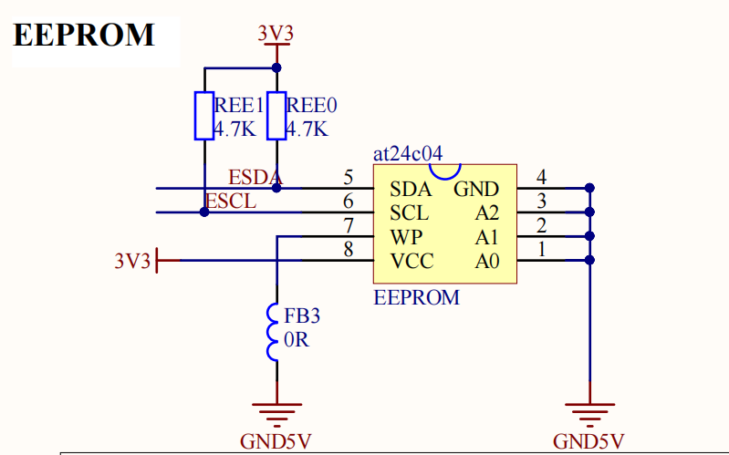
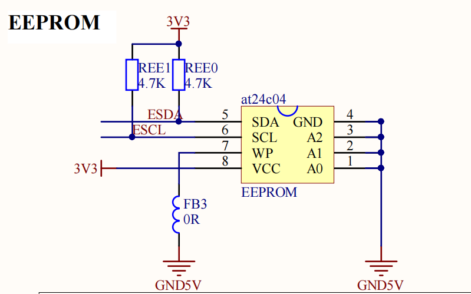

猫巾的博客
猫巾的博客
有关MSP432 EEPROM的函数库及头文件声明:exineeprom.c exineeprom.h。注本库适合at24c04芯片。
2型板为例，EEPORM电路如下图，其中ESDA对应引脚为P8.2，ESCL对应引脚为P9.2。

相关重要函数说明：

EEPROM使用说明
有关MSP432 EEPROM的函数库及头文件声明:exineeprom.c exineeprom.h。注本库适合at24c04芯片。
2型板为例，EEPORM电路如下图，其中ESDA对应引脚为P8.2，ESCL对应引脚为P9.2。

相关重要函数说明：
1.EEPROM初始化函数
2.向EEPROM写入一字节函数与读一个字节函数。
3.向EEPROM写入一个32位整型数据函数与读取一个整型数据函数。
此函数占用四个存储空间。
4.向EEPROM写入一个16位短整型数据函数与读取一个短整型数据函数。
此函数占用两个存储空间。
5.向EEPROM写入一个32位浮点数函数与读取一个浮点数函数。
此函数占用四个存储空间。
6.向EEPROM写入一个64位双精度浮点数函数与读取一个双精度浮点数数据。
此函数占用八个存储空间。
应用举例:
1:向EEPROM写入一串数据，并读出。
2022年1月创 于 Github管理
http://hihii11.github.io/GWJ_BLOG.html
@猫巾